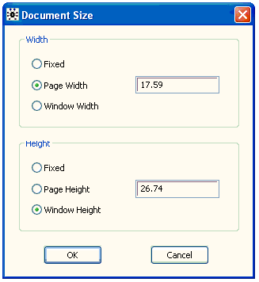
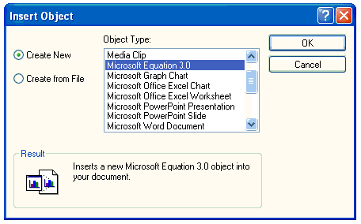
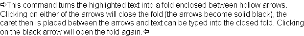
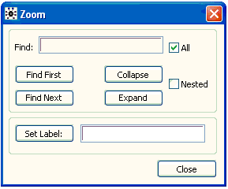

![[toolsmenu0]](toolsmenu0.bmp) The Tools Menu
The Tools Menu
Contents
General properties
Document Size...
Insert OLE Object...
Insert Header
Create Link
Create Target
Create Fold
Expand All
Collapse All
Fold...
Encode Document
Encode Selection
Encode File...
Encode File List
Decode
About Encoded Material
General properties [top]
The commands in this menu provide various miscelaneous tools.
Document Size... [top]

Insert OLE Object [top]
This command opens a modal dialog box allowing an OLE object to be inserted into a document at the caret position.

Insert Header [top]
This command inserts a header into the document which becomes visible when the document is printed.
Create Link [top]
This command turns the highlighted text into a hyper text link if possible. The highlighted text must have a form like <Dialog.Bleep> Bleep <> which gives the following link .
Typical links are
<StdLinks.ShowTarget('Contents')> top <>
<StdCmds.OpenBrowser('Manuals/ToolsMenu', 'Tools Menu')> Tools Menu <>
If the 'Show Marks' command from the Edit menu is choosen links show up as angled hollow arrows.To return the link into text form hold the control key down and click into one of these arrows.
Create Target [top]
This command turns the highlighted text into a target that can be jumped to. The highlighted text should have a form like <ExpandAll>Expand All<>.
If the 'Show Marks' command from the Edit menu is choosen links show up as hollow circles.To return the target into text form hold the control key down and click into one of these circles.
Create Fold [top]
This command turns the highlighted text into a fold enclosed between hollow (open) arrows. Clicking on either of the arrows will close the fold (the arrows become solid black), the caret is then placed between the arrows and text can be typed into the closed fold. Clicking on the black arrow will open the fold again.
The text in the open fold

The text in the closed fold
Expand All [top]
This command opens all the closed folds in the document.
Collapse All [top]
This command closes all the open folds in the document.
Fold... [top]

Encode Document [top]
This command encodes a document into ascii characters. The encoded version of the document is opened in a new window. The encoded document can be sent by email.
Encode Selection [top]
This command encodes a highlighted section of a document into ascii characters. The encoded section of the document is opened in a new window.
Encode File... [top]
This command encodes a file into ascii characters. The encoded version of the file is opened in a new window. A standard file open dialig pops up for choosing which file to encode
Encode File List [top]
This command encodes a list of files into a document containg only ascii charcters. The document is opened in a new window. The list of files to be enco´ded must be highlighted in the document in the top window.
Decode [top]
This command decodes an encoded document, file or list of files.
About Encoded Material [top]
This command gives information about what is encoded.